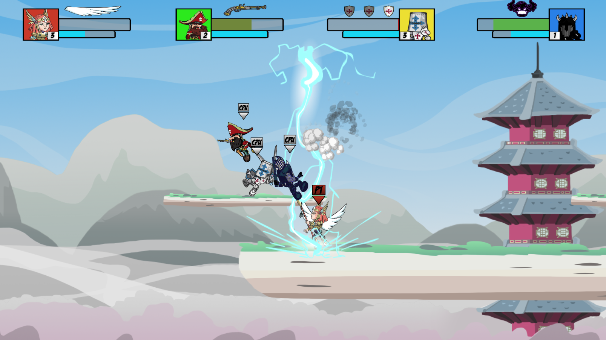
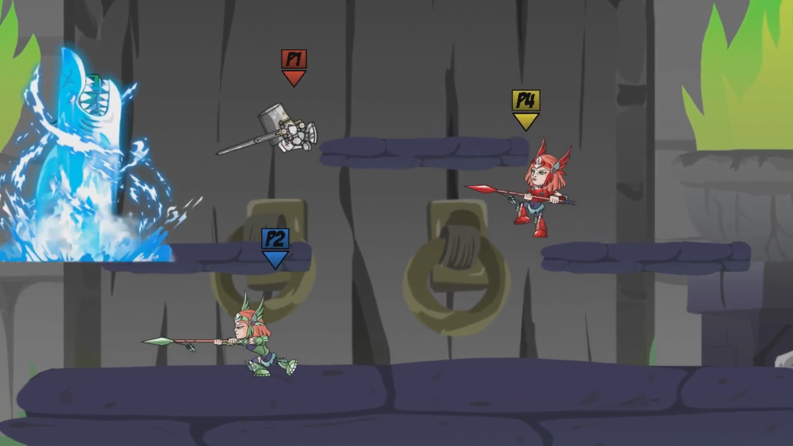

Timeless Warriors is a 2D fighting game, greatly inspired by Super Smash Bros. Melee. The game features a total of 4 unique characters, each one with it's own moveset making it feel special. The objective of the game is to knock your opponenets away from the stage with your attacks and the different kinds of gadgets that appear during the brawl.
This game was developed by a group of 4 during the second year of Higher Education in Computer Games and Programming Skills. I mostly focused on programming the gameplay, but I also helped with Design and some Animations for the characters.
Working on Timeless Warriors was an amazing experience, since it was the first fully fleshed game I developed on Unity, before it was all small class projects. I feel like my skills as a gameplay programmer improved a lot thanks to this project, and it's where my love for programming games really started.
I was focused on programming the gameplay of the game. I started by working on our Entity structure, making it so we could easily have bots and different kinds of character.
I also implemented the movement of the characters, which was side movement and double jump all based on Stats which could influence the way our character plays like movement speed, number of jumps, falling speed, etc.
Implemented all the combat mechanics in the game, laying out the base structure of our Attacks. Each character could have 5 light attacks(2 grounded, 3 on air), 3 special attacks and 1 ultimate move, so it was very important to be able to easily create new kinds of attacks for each character with our structure.

Also worked on how each attack would interact with the entity it hit, since each attack could have a different force value and direction for the knockback and of course, damage, it would apply.
I implemented the dash and parry mechanics to help with the defensive gameplay, the edge grab mechanic and also the energy system for the ultimate move.
Implementing each individual character with its own attacks, special mechanics and ultimate attack. 
Each character had it's own special mechanic, for example, Kara the Valkyrie could jump three times and had slow fall or the Dark Knight, who could drop a shadow clone on the battlefield which would copy his basic attacks and allowed the player to teleport to it at any time.
To finish my contribution, I implemented how we managed and loaded each different scenario to fight, the characters and each skin of them.